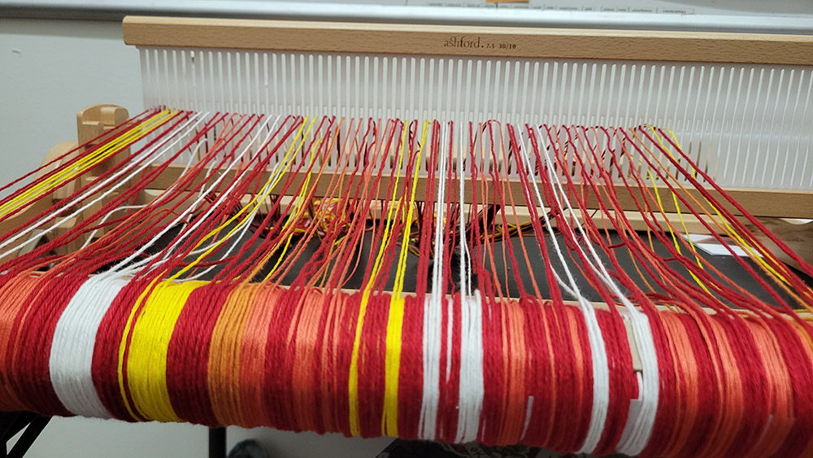

Week 6 of "Future Text: AI in Languages, Literatures, and Cultures" has me approaching more familiar ground than the quarter so far. The class, like my non-English DH course, has a final project component. With 60 students, two instructors, and two TAs, we've split the students into four groups for final project support and advising, and I took the 20 students doing projects that are in some way technical, or involve hands-on crafting. For a class that's often felt disorienting (I'm not used to so many, particularly so many who for much of the quarter have been so reluctant to talk at all, willing to push Brandon Walsh's tips to the breaking point), supporting 20 students to whatever extent they want in doing a technical or creative thing feels like a shift to something I'm more comfortable with. I've had 20 students before, both in last spring's "Data Visualization with Textiles", and nearly 20 in fall 2020's non-English DH class. I might even have a prayer of learning at least these 20 students' names before the quarter is over.
I've been more careful than usual when it comes to taking on things this quarter, given the scale of the class and how much time and space it takes up in my calendar, on my to-do list, and in my head. Other DH projects are going more slowly when they involve a sizable investment of time on my part. Some things are on hold until winter. I'm behind on planning workshops at the Makerspace. But the shift towards final projects and Thanksgiving on the horizon have left me feeling like we might actually pull this off, and I can risk indulging myself in one of my favorite things to do when assigning final projects: do one myself. This belated blog post (it's okay, I checked with me and granted myself an extension) is my project proposal, for my own amusement and yours.
For my final project I'm going to try to grapple with what we did with this AI class. Because the topic we're covering is rapidly changing, new things are being written, and we had to rethink the format of the class given the students' reluctance to talk, not all the readings were things I, at least, thought long and hard about -- even when they were readings that I was changing to at the last minute. I wanted to take a moment to actually engage with them on a different level, individually and as a whole. Similarly with the students: there are a lot of them, and I don't have the luxury of getting to know them better in smaller groups like the TAs do in section. I have access to systems with data about them -- their major, their grades on assignments, their attendance -- but struggling with names particularly for the students who never talk in class, all the data seems more like a pile of facts than anything I have a feel for on any level. So I'm going to try to weave the class and make something beautiful, or at least striking, out of it.
I've discovered this quarter that I really love weaving, and if I have a rigid heddle loom project going, it takes a lot of willpower to not stay up far too late working on it. This will likely come in handy on this project, because some of it will necessarily be last-minute work. I'm going to work with four sets of data: student majors, readings / lecture slides, attendance, and assignments. (Final project type -- analytical, creative, or technical -- might be a fifth.)
The first time I tried to weave data on the rigid heddle loom, it was my library group's Slack messages, and I warped the loom using the same solid color all the way across. I soon learned how limiting this was, but I'd already put in a whole evening figuring out how to warp a loom in my kitchen and I wasn't going to start over. So that project wound up being all color and stripes. And I liked it, but I wanted to do more with warp/weft interplay and patterns, so my second project (currently in progress) has a more thoughtfully crafted warp (depicting what Star Trek series are represented in the novels, in what proportions). But then the data wasn't sorted the way I thought it was, and I didn't notice until 100+ rows in, so it'll end up doing something a little different than I was planning.
Because I wanted to do the Star Trek data at least somewhat in chronological order, I was limited in what I could mix and match to get different patterns at the intersection of warp and weave. With the AI class, weaving the data in different orders is actually beneficial, as a way to enhance student privacy. Unusually for me, for this weaving I'll be working with a more limited palette of colors than I would otherwise, in order to maximize the possibilities for interesting patterns to emerge as the colors intersect with themselves. Colors will carry different meanings depending on where they occur in the weaving. The colors themselves aren't my usual favorite blues, greens, and purples: for this weaving, it'll be yellow, orange, red, white. It feels like the world is on fire, AI discussions often escalate to hitting the panic button -- and it's a small nod to the knitting I've been doing on the days when Laura Wittman does the lecture, using a yarn from Republic of Yarnia dyed to represent a fire-breathing dragon.
As I worked on putting together a spreadsheet with the data, I realized I'm going to have to grapple with issues of scale. I'm counting not individual lecture slides (those numbers were boring, landing consistently in the 25-35 range) but words on the lecture slides (500-2,200). I was thinking of lopping off two zeroes and weaving 5-22 rows for those slides, but that's not going to work for the readings, where the Stephen Wolfram piece on how ChatGPT works comes in at 20,700 words. I'm not weaving 207 rows for that reading; I'm thinking of scaling readings to a row per thousand words, even though it means reducing favorite pieces to two rows with some generous rounding.
Working with the student major data has led to some discoveries about how my university is set up. Just about half the students are CS majors; more if you include the several math + CS majors. CS is part of the Engineering division, along with various other flavors of engineering, including mechanical engineering, management science & engineering, and bioengineering. Altogether, folks affiliated with the engineering division are 2/3 of the class. I was vaguely aware on some level that the sciences have a closer organizational kinship with the humanities than CS, but I rarely think about the fact that biology and physics are in the divisional bucket as my non-English literature department. The student majors, I've decided, will be the warp threads, and I'm hoping to show those divisional relationships in how I map majors to colors: things in the red zone for engineering, yellow for humanities, orange for sciences, and white for undecided.
Scale is relevant for the student data, too. To get the number of warp threads I want, 60 students is for once not enough: each data point will be represented twice. I managed 90" warp threads by warping the loom in my office across two long tables, which will help me pack in the data about attendance and student assignments: even using a thin yarn for student data, each assignment takes up a lot of space with 60 students.
The question I kept going back to when reviewing student final project proposals was, "How does this connect to the themes of the class?" It would not have satisfied me, in my instructor hat, for the answer just to be that this weaving is a representation of the class. There's three points that I think make this work:
- My relationship to this data: we've talked about Books3 and how clearly some thought went into its construction (so much "Magic Treehouse"!) but we don't have access to that decision-making logic. One of the things that's struck me in talking with the CS students is their attitude towards data: they casually reference grabbing data sets off of Kaggle. With the kind of digital humanities I do and teach, data is never something you can just grab somewhere. Odds are, you're building it -- slowly, painstakingly, and with a great deal of thought and care. You end up with a very different relationship with data that way. I want to apply that kind of thoughtfulness to the data created by this course, considering issues like scale and how it maps to color, and incorporate those elements deliberately into the weaving. If I get Dall-e 3 access before the end of the quarter, I might try dumping in the data and asking it to generate some art and explain it as a point of comparison.
- Where your data ends up: the conversations you have with ChatGPT go back into its training data, though you often don't think about it. (The API can be different, but the chat interface is still the primary one for many people.) It's easy to put that out of your mind, but having your data show up in front of you as a physical object (anonymized, but I imagine students can find threads that represent themselves and their work if they look) is much harder to forget about.
- Following AI instructions: I tried to ask ChatGPT for weaving advice, as a fairly new weaver. As usual, it wrote superficially fluent prose, and even got fairly detailed, but the actual information about how to implement different designs did not line up especially well with the handbook I picked up from my local library. Add another craft to the list of dubious ChatGPT topics -- honestly, it's kind of amazing it sounded as plausible as it did, given the older age skew of weavers and the amount of information online compared to, e.g. knitting or crochet.
I had a moment of panic when I finished warping the loom that I had created some kind of abominable hot dog with a condiment buffet.

I consoled myself with the idea that I could write it off as a homage to the hot dog / not a hot dog app in Silicon Valley, or maybe there's a story here about how the humanities is treated like some mustard on the hot dog of a CS undergrad education.
Now that I've started adding the actual data, though, I'm more curious than despairing.
One row at a time, it's coming together.